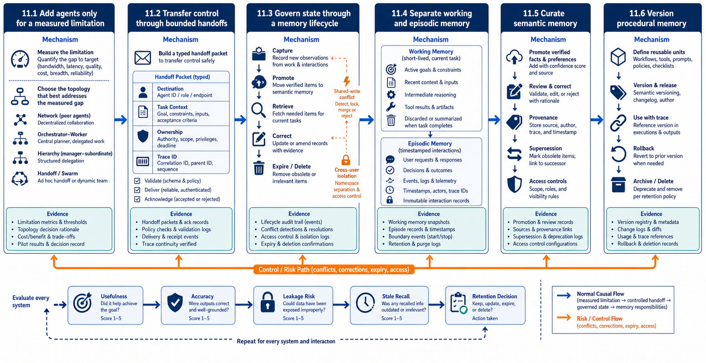
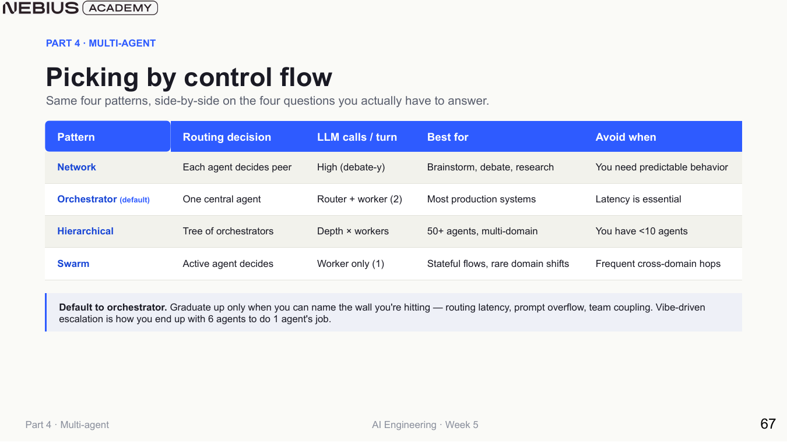
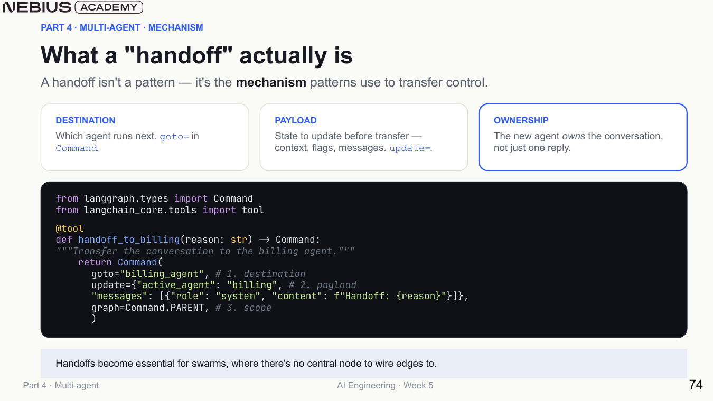
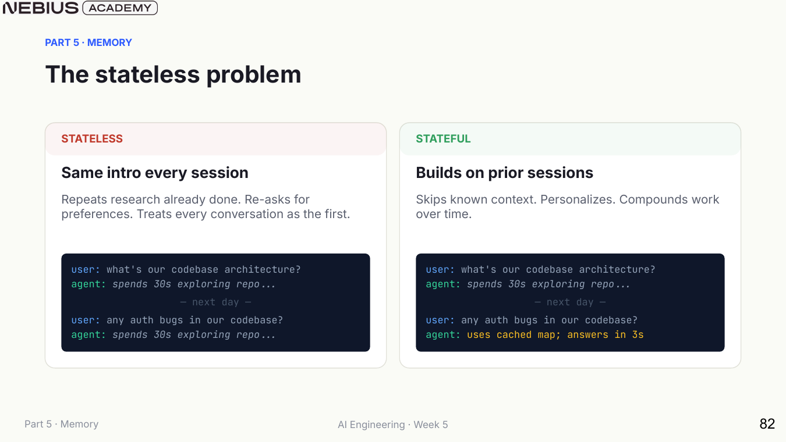
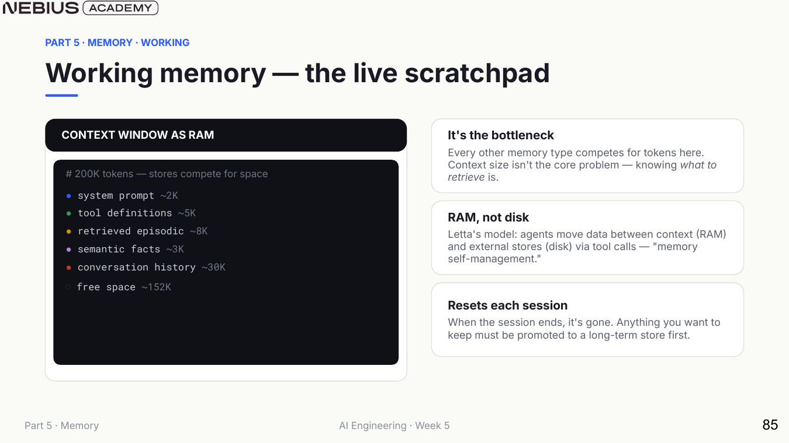
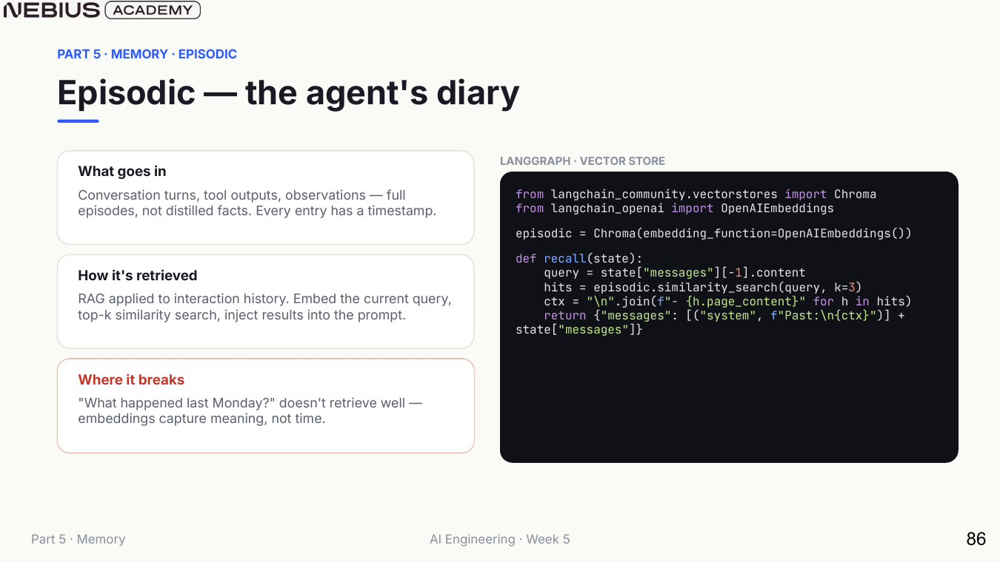
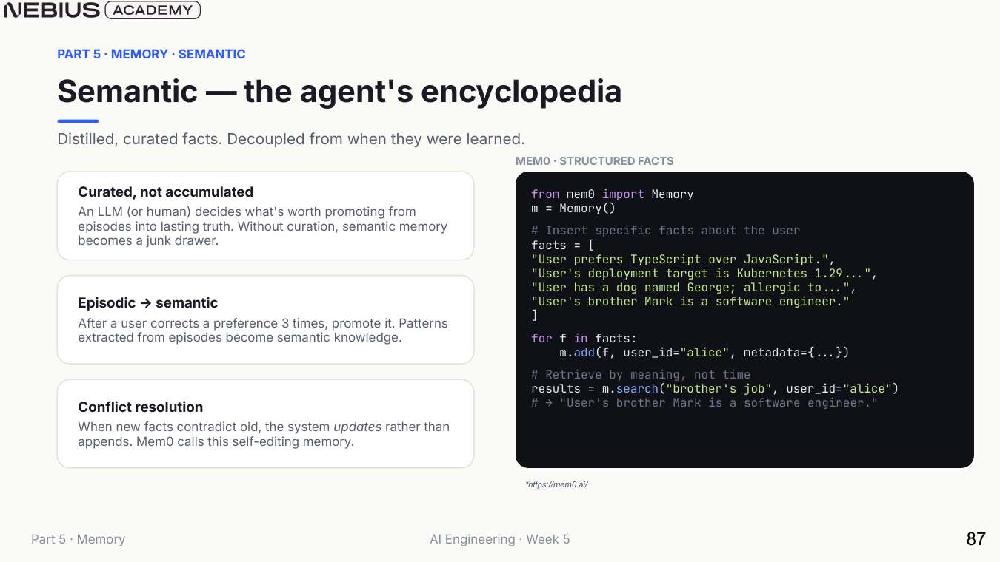
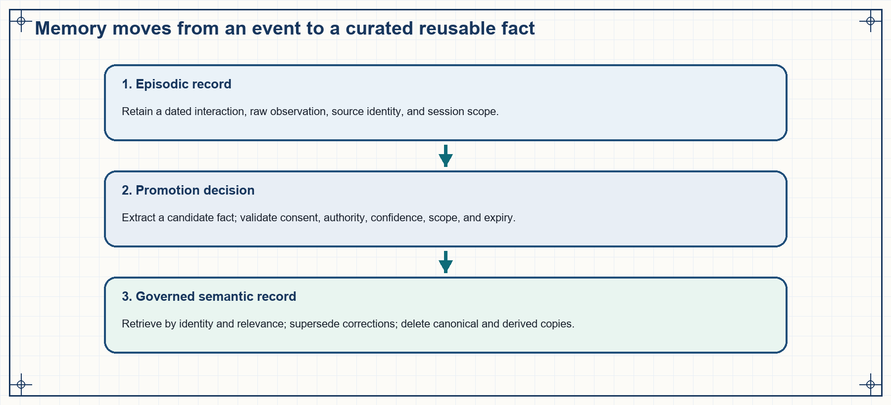
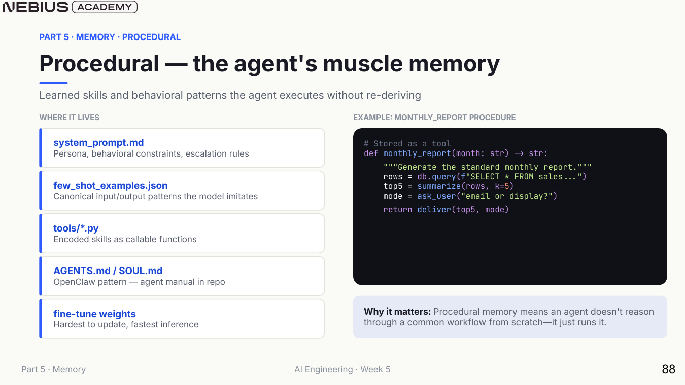

11 Coordinating agents and managing persistent memory
Chapter 10 added planning, a shared tool protocol, and controlled retrieval recovery to one agent loop. A separate agent is justified only when one context, tool set, policy, responsibility domain, or serial execution path creates a measured limit. A multi-agent design begins with the limitation, selects a communication topology, transfers control through typed handoffs, and governs what persists across sessions.

The map compares several ways to transfer work and shows that state may persist only when the system defines who may read or change it, how it is reused, how errors are corrected, and when it is removed.
11.1 When extra agents are warranted
A multi-agent system assigns different prompts, tools, or state views to separate agent loops and defines how control transfers among them. It is not automatically cleaner than one agent. The extra agents add routing calls, handoff state, duplicated context, termination risk, and a larger evaluation surface.
- Multi-agent system: A controlled composition of two or more agent policies with explicit communication, state responsibility, routing, and termination rules.
Four recurring limitations provide concrete reasons to consider that composition:
- Tool overload: one agent sees so many similar tools that selection degrades.
- Context bloat: unrelated domain instructions and evidence compete in one context window.
- Serial bottleneck: independent subtasks dominate wall-clock time when executed by one loop.
- Team boundary: team responsibility, permissions, deployment cadence, or compliance differs by domain.
Escalation test
Name the limitation, measure it with the single-agent baseline, predict which multi-agent pattern removes it, and specify the new failure modes before implementing another agent.

Orchestrator-worker is the normal production baseline because routing decisions are centralized. The other patterns are justified by specific control-flow needs.
| Pattern | Who selects the next agent? | Best fit | Dominant failure mode |
|---|---|---|---|
| Network | Each agent may select any peer | Small exploratory debate or research groups | Edges and unpredictable interactions grow roughly quadratically |
| Orchestrator-worker | A central router | Most specialized production systems | Router latency, misrouting, and supervisor drift |
| Hierarchical | Routers at multiple domain levels | Large organizations or many isolated domains | Multiple routing layers, latency, and error propagation |
| Swarm | The active worker hands off directly | Stateful conversations with infrequent domain shifts | Ping-pong handoffs and hidden global completion state |
11.2 Bounded agent handoffs
A pattern describes the topology of possible communication. A concrete system still needs a mechanism for moving from one active agent to another without losing intent, authorization, or progress. A handoff must name the destination, carry only the state required by the receiving agent, and state who is responsible for the next response and completion check.

A handoff transfers control to another agent together with a bounded state payload and completion responsibility. It changes which policy is responsible for the next decision and therefore must be visible in state and traces.
A typed handoff carries only the state the destination needs.
Code example: A typed handoff carries only the state the destination needs.
class Handoff:
destination: Literal["billing", "auth", "notifier"]
reason: str
task: str
evidence_refs: list[str]
authorization_ref: str | None
return_to: Literal["orchestrator", "user", "none"]
def accept_handoff(handoff, state):
validate_destination(handoff.destination)
validate_authorization(handoff.authorization_ref, handoff.task)
return state.transfer_control(
active_agent=handoff.destination,
bounded_context=load_refs(handoff.evidence_refs),
)The state transfer makes the most important handoff failure modes directly testable:
| Failure | Observable symptom | Mitigation |
|---|---|---|
| Routing oscillation | Agents hand control back and forth without new evidence | Handoff budget, visited-route state, and loop detection |
| Context loss | Destination repeats work or misreads user intent | Typed task, evidence references, constraints, and completion criteria |
| Supervisor drift | Central router begins solving domain work itself | Narrow router outputs and separate route-accuracy evaluation |
| Hidden partial failure | One worker fails but synthesis sounds complete | Per-worker status, required-result set, and incomplete-result response |
| Permission amplification | Worker receives broader permissions than the originating task requires | Attenuate scopes at every handoff and re-check side effects |
The sections above coordinated specialized agents by transferring only the state required for the next responsibility. Long-lived systems also need rules for what should persist across turns, sessions, and software versions without treating every past message as permanent context. Persistent state therefore needs explicit retention, update, access, correction, and deletion rules before it can re-enter a later request.
11.3 Memory lifecycle
A checkpointer in Chapter 9 restored state within a session or thread. Long-lived agents need a more precise account of what should persist, how it is retrieved, and how contradictory or sensitive information is corrected. The four-part memory taxonomy separates live context, dated events, curated facts, and learned procedures.

Persistence is valuable only when retrieved state is relevant, current, authorized, and cheaper than recomputation.
| Memory type | Content | Typical store | Key governance question |
|---|---|---|---|
| Working | Current prompt, messages, plan, and tool observations | Context window and graph state | What deserves scarce context tokens now? |
| Episodic | Timestamped interactions and outcomes | Event log or vector/time index | Which past event is relevant and permitted? |
| Semantic | Curated facts and preferences | Profile, knowledge graph, or fact store | Is the fact valid, scoped, current, and correctable? |
| Procedural | Reusable behavior, prompts, examples, tools, and skills | Versioned code and instruction assets | Who reviewed the procedure and which version ran? |
A memory system manages selected state through a lifecycle: capture, promotion, retrieval, correction, expiry, and deletion. Capture identifies candidate information and its source. Promotion decides whether the information becomes durable. Retrieval selects it for a later decision. Correction, expiration, and deletion govern what happens when the fact changes or loses value.
Quality depends on both usefulness and restraint. Recall of relevant memory measures whether prior information helps; injection rate measures how often irrelevant or stale memory enters context; conflict tests measure whether corrections supersede older facts; privacy tests measure isolation and deletion. These metrics connect memory value to its governance cost.
11.4 Working and episodic memory
The memory taxonomy separates live context from durable records. Working and episodic memory can both contain prior conversation, but they differ in lifetime, retrieval, and the risks of irrelevant recall. The comparison begins with context as scarce active state and then moves outward to timestamped event storage.

A larger context window does not answer the retrieval question. Irrelevant history can crowd out policy, evidence, and output space even when it technically fits.
Working memory should contain the smallest sufficient state for the next decision: stable policy, current objective, active plan, selected evidence, recent observations, tool schemas, and reserved output capacity. Summaries may replace raw history, but a summary loses detail and should retain references to important source events.

Semantic similarity alone is weak for temporal questions. Episodic retrieval often needs user, session, time, entity, and access filters in addition to embeddings.
- Store event identity, timestamp, actor, task, action, observation, outcome, and provenance.
- Retrieve with structured filters before or alongside semantic ranking.
- Prefer compact event summaries for context, but retain a link to the immutable event record.
- Set retention and deletion rules; conversational history is user data, not free product context.
- Evaluate recall of relevant episodes, injection of irrelevant episodes, stale-event use, latency, and privacy-policy compliance.
11.5 Semantic and procedural memory
Episodic memory preserves dated events and their outcomes. Raw events do not automatically become reliable current facts, especially when observations conflict or user preferences change. Semantic memory introduces an explicit promotion and correction process before a fact becomes reusable across sessions.

Appending every extracted statement creates a junk drawer. Promotion needs a schema, confidence, scope, provenance, conflict rule, and correction path.

The promotion step is an application policy. The model may propose a candidate memory, but deterministic code or human review decides whether it becomes durable.
After identity, permission, status, and deletion filters remove ineligible records, rank remaining records by relevance, freshness, and source reliability.
\[ S(m,q)=w_r\mathrm{relevance}(m,q)+w_f\mathrm{freshness}(m)+w_s\mathrm{reliability}(m) \tag{11.1}\]
Here, \(m\) is one eligible memory record, \(q\) is the current request, the three component functions return calibrated relevance, freshness, and source-reliability values, and \(w_r\), \(w_f\), and \(w_s\) state their product-specific weights. The sum ranks candidates; it never overrides a deterministic access or deletion rule.
Worked calculation - rank a governed memory candidate
Use weights 0.5 for relevance, 0.3 for freshness, and 0.2 for source reliability. One eligible record scores 0.8, 0.6, and 1.0 on those components.
- Relevance contributes 0.5 x 0.8 = 0.40.
- Freshness contributes 0.3 x 0.6 = 0.18.
- Source reliability contributes 0.2 x 1.0 = 0.20.
- The combined score is 0.40 + 0.18 + 0.20 = 0.78.
Result: The record’s governed retrieval score is 0.78.
Interpretation: The number is meaningful only after calibration against retrieval decisions. A deleted, unauthorized, or wrong-subject record remains ineligible even if its similarity is high.
A semantic fact record carries lifecycle metadata.
Code example: A semantic fact record carries lifecycle metadata.
class MemoryFact:
subject_id: str
predicate: str
value: str
scope: str
source_episode_ids: list[str]
confidence: float
created_at: datetime
reviewed_at: datetime | None
expires_at: datetime | None
status: Literal["candidate", "active", "superseded", "deleted"]Code example 11.1 - promotion and deletion update both the canonical store and derived indexes.
Code example: Code example 11.1 - promotion and deletion update both the canonical store and derived indexes.
def promote_memory(candidate, user):
require(candidate.provenance and candidate.observed_at)
require(user.consent_for(candidate.category))
verified = validate_candidate(candidate)
return memory_store.put(
subject=user.id,
kind=classify_memory(verified),
value=verified.value,
expires_at=retention_policy(verified),
source=verified.provenance,
)
def delete_memory(subject, memory_id):
memory_store.tombstone(subject, memory_id)
derived_indexes.remove(memory_id)
cache.invalidate(memory_id)
deletion_audit.record_without_value(subject, memory_id)Promotion requires provenance, observation time, consent for the data category, validation, scope classification, and a retention result. Deletion reaches the canonical record, vector or lexical indexes, and caches. The audit keeps proof that deletion occurred without retaining the deleted value itself.
Correction rule
When a new fact conflicts with an active fact, do not silently append both. Resolve identity and scope, preserve provenance, supersede or reject the old value, and make the corrected state visible to the user when appropriate.
Semantic memory contains curated facts and preferences whose expected lifetime extends beyond one episode. Promotion is an application decision based on evidence, user consent where relevant, confidence, and scope. A candidate statement stays episodic until sufficient evidence supports promotion to a durable profile fact.
Conflict resolution compares identity, time, source reliability, and whether the new statement corrects or merely supplements the old one. Superseded facts remain traceable without continuing to influence generation. Evaluation measures retrieval utility, stale-fact use, correction success, cross-user isolation, and deletion propagation.
11.6 Versioned procedural memory
Semantic memory stores reusable facts about entities and preferences. Reusable behavior is a separate asset. It determines how the agent acts; facts and preferences determine what the agent knows. Procedural memory should therefore be treated as versioned product logic with tests and release controls.

Procedures should enter the same release discipline as code: review, version, test, deploy, observe, and roll back.
A reusable workflow encoded as a tool or instruction asset saves the agent from re-deriving behavior. It can also preserve a mistake indefinitely. Record the procedure version with every run, maintain conformance tests, and distinguish a user preference in semantic memory from a system rule in procedural memory.
| Lifecycle stage | Memory question | Evidence |
|---|---|---|
| Capture | What event or candidate fact is worth storing? | Eligibility rule, consent, provenance, sensitivity label |
| Promote | Should repeated events become a durable fact or procedure? | Confidence, recurrence, review, and scope |
| Retrieve | Which memory is relevant to this task and user? | Filters, rank, freshness, authorization, token cost |
| Use | How did memory affect the decision or answer? | Injected memory IDs and trace attribution |
| Correct | How are conflicts, user corrections, and stale data handled? | Supersession record and regression test |
| Forget | When must data expire or be deleted? | Retention schedule, deletion proof, and downstream propagation |
Chapter checkpoint
Agentic RAG adds bounded recovery to retrieval. Multi-agent systems add specialized control loops only when one agent hits a measured limitation. Memory adds a governed persistence lifecycle, not an unlimited conversation dump.